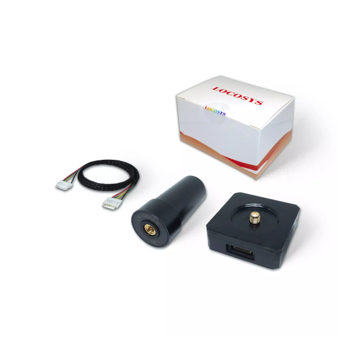
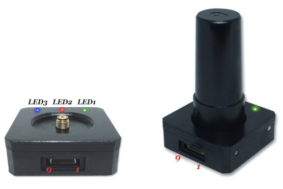

LOCOSYS HAWK R1 & R2 RTK GNSS¶
HAWK R1 and R2 (with compass) is a L1+L5 dual-frequency RTK centimeter-level GNSS receiver designed for UAV applications. The receiver is capable of concurrently tracking global civil navigation systems, including GPS, GLONASS, GALILEO, BEIDOU and QZSS. It acquires both L1 and L5 signals at a time while providing the centimeter-level RTK positioning accuracy.
{kind=link}
Note
HAWK R1 and R2 GNSS requires L1 and L5 RTCM GNSS correction data for a stable RTK fix
Key Features¶
Concurrent reception of L1 and L5 band signals
Centimeter-level RTK high position accuracy
Support GPS, GLONASS, BEIDOU, GALILEO, QZSS
Capable of SBAS (WAAS, EGNOS, MSAS, GAGAN)
Support 135-channel GNSS
Fast TTFF at low signal level
Free hybrid ephemeris prediction to achieve faster cold start
Default 5Hz, up to 10 Hz update rate, SBAS support 5Hz only
Build-in super capacitor to reserve system data for rapid satellite acquisition
Three LED indicator for Power, Pulse per Second and Data transmit
HAWK R2 integrated with IST8310 compass via I2C bus
JST-GH cable (Dronecode standard) for direct connection to i.e. Cube Autopilot
Frequency¶
GPS/QZSS: L1 C/A, L5C
GLONASS: L1OF
BEIDOU: B1I, B2a
GALILEO: E1, E5a
Interfaces¶
1 UART 230400 bps, 8 data bits, no parity, 1 stop bit
1 I2C
1 Antenna interface (SMA)
Protocols¶
UBX binary UBX-NAV-PVT, UBX-NAV-DOP, UBX-NAV-TIMEGPS
RTCM version 3.x
Supply voltage¶
3.3V - 5V
Size and weight¶

Size: 46.5*46.5*16 mm without antenna
Weight: 26g, 40g with antenna
{kind=link}
LED¶
Pin No |
Name |
Description |
|---|---|---|
LED 1 |
TX LED |
Green, GNSS data transmit indicator |
LED 2 |
Power LED |
Red, Power indicator |
LED 3 |
PPS_LED |
Blue, Pulse per Second indicator |
Pinout GNSS connector¶
Pin No |
Name |
Description |
|---|---|---|
1 |
VCC |
DC supply voltage 3.3V ~ 5.0V input |
2 |
GNSS_RX |
Receive Data Input |
3 |
GNSS_TX |
Transmit Data Output |
4 |
GNSS_PPS |
GNSS pulse per second, 100ms pulse width, 1.8V DC |
5 |
NC |
NC |
6 |
NC |
NC |
7 |
I2C_CLK |
Magnetometer I2C serial clock |
8 |
I2C_DAT |
Magnetometer I2C serial data |
9 |
GND |
Ground |
Pinout JST-GH cable connector (standard pinout)¶
Pin No |
Name |
Description |
|---|---|---|
1 |
VCC |
DC supply voltage 3.3V ~ 5.0V input |
2 |
GNSS_RX |
Receive Data Input |
3 |
GNSS_TX |
Transmit Data Output |
4 |
I2C_CLK |
Magnetometer I2C serial clock |
5 |
I2C_DAT |
Magnetometer I2C serial data |
6 |
GND |
Ground |
Where to buy¶
You can buy it from LOCOSYS.